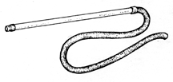

Chapter 2 - Breeding
Embryo Collection
(Source: M. Westerfield)
Collect embryos by siphoning them up from among the marbles at the
bottom of the tank. Make the siphon from a plastic or glass tube (1 cm i.d. and
30-50 cm long) covered at one end with a piece of tygon tubing to protect it from
breaking. To catch the embryos, direct the stream of water, started by mouth
suction, through a medium-mesh nylon net. After sweeping the bottom of the
tank from side-to-side with the siphon, invert the net over a petri dish or finger
bowl filled with 10% Hank's saline (see RECIPES,
Chapter 10). The embryos will fall off the net when they come into contact with
the saline. To help prevent mold, clean the embryos right away by rinsing them
several times with fresh 10% Hank's. Remove feces and other residue with
forceps. If problems with mold are still encountered, the embryos can
be washed at this point for 2 min with a 0.5% solution of bleach.
 Embryo syphon
The Zebrafish Book